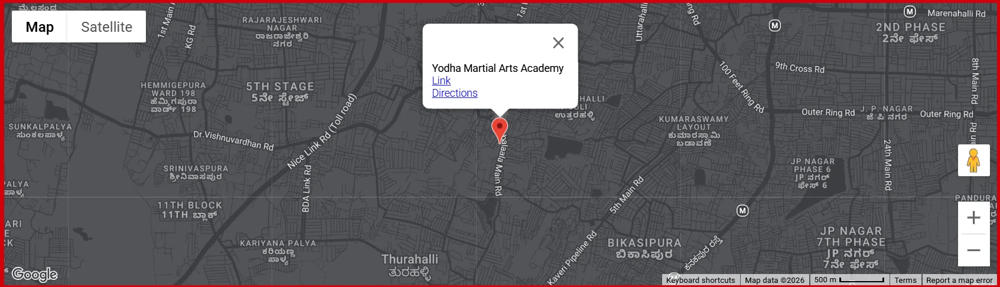

VISIT / UTTARAHALLI
Visit Yodha in Uttarahalli
Find Yodha Martial Arts Academy on Subramanya Pura Road near Narayana Techno School in Uttarahalli, Bengaluru.
Address
1st Floor, No 34/1, Subramanya Pura Rd, near Narayana Techno School, Uttarahalli Hobli, Bengaluru, Karnataka 560061
Phone
ACADEMY HOURS
Monday–Saturday · 6:00–11:00 AM & 5:00–9:30 PM
Sunday closed.
Class timings are arranged based on request rather than published as a fixed timetable.
Personal coaching with Rakesh Yadav is available. Yodha also operates as a regular gym.
FIND YODHA
Uttarahalli, Bengaluru.
1st Floor, No 34/1, Subramanya Pura Rd, near Narayana Techno School, Uttarahalli Hobli, Bengaluru, Karnataka 560061.

Come in and see how the training feels.
Call or email Yodha to arrange a trial or ask which program fits what you want from training.